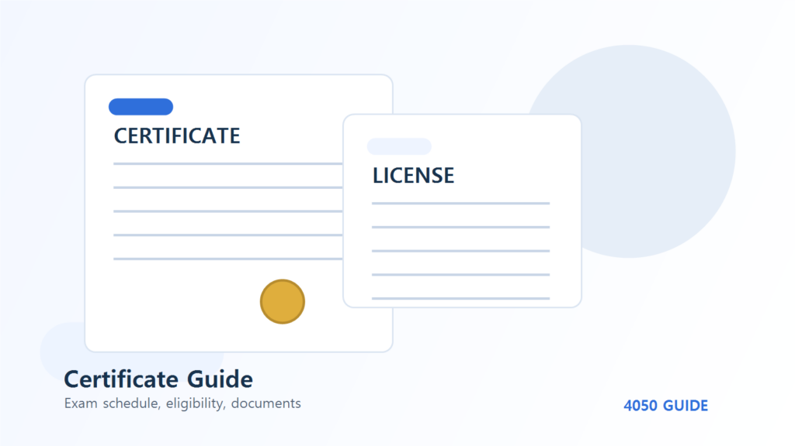

4050 자격증 로드맵 취업공고에서 훈련비까지 비교하는 순서
자격증 순위를 정하기 전에 내가 지원할 수 있는 일과 감당할 수 있는 훈련을 연결해야 합니다. 전기·요양·조리 공고의 서로 다른 진입 조건에서 출발합니다.
자료의 범위 2026년 10월 30일 고용24에서 확인한 비교용 표본입니다. 마감된 공고·과정도 포함하며 현재 모집을 안내하는 목록이 아닙니다. 직접 지원·전화·수강한 후기가 아니며 평균 임금이나 취업 가능성을 추정하지 않습니다. 원문에 없는 조건은 미확인으로 남겼습니다.
첫 단계는 자격증 이름보다 일자리 조건입니다
퇴직 후 준비 기간이 짧다면 원하는 직업의 이름보다 신입 지원 여부, 통근 범위, 근무시간부터 적어보세요. 채용공고에 자격증이 우대라고 적혀 있어도 다른 항목에서 경력을 필수로 요구할 수 있습니다. 자격증 한 개가 모든 조건을 대신하지는 않습니다.
아래 세 사례는 서로 다른 직무입니다. 급여순으로 순위를 매기기 위한 자료가 아니라, 내가 갖춰야 할 조건이 무엇인지 찾기 위한 대조표입니다. 연령별 채용 실적이나 50대 합격 가능성은 이 공고만으로 알 수 없습니다.
| 공고 표본 | 임금 표기 | 경력·자격 | 근무조건·확인할 점 |
|---|---|---|---|
| 엔제이정보통신 전기·통신 설치 신입 | 월 240만원 이상 | 신입 / 전기기능사·방송통신기능사 우대 | 주5일 / 주40시간 표기·세부 시간은 원문 확인 시설 점검만 하는 직무가 아니라 케이블·CCTV 등 설치 업무 포함 |
| 효사랑요양원 주간·퐁당당 모집 | 월 228만~250만원 | 관계없음 / 요양보호사 필수 | 상세란08:30~17:30·주5일 / 제목은 주간·퐁당당 병기 제목과 상세 근무표 중 실제 배정되는 근무형태 확인 필요 |
| 예스콘씨에스 경기케어센터점 조리원 | 시급 10,500원·주휴수당 별도 표기 | 신입 / 자격면허 관계없음·자차 필수 안내 | 월~금05:00~16:00·식사 및 휴게60분 신입 가능이어도 새벽 출근과 자차 조건을 충족해야 함 |
두 번째는 포기할 수 없는 조건을 먼저 거르는 일입니다
운전을 하지 못한다면 자차 필수인 조리원 공고는 자격면허 관계없음이라는 문구만 보고 선택하기 어렵습니다. 야간 근무가 어렵다면 요양원 공고의 주간 표기와 제목의 퐁당당 표기가 함께 있는 이유를 먼저 물어야 합니다. 탈락할 조건을 미리 확인하면 불필요한 교육비 결제를 줄일 수 있습니다.
편집자가 권하는 메모 순서는 희망 지역, 편도 통근 한도, 가능한 요일, 야간 가능 여부, 지금 가진 경력입니다. 이 다섯 칸 중 하나라도 맞지 않으면 다음 공고를 찾고, 조건이 맞는 공고들에서 반복되는 자격을 교육 후보로 남기세요. 이는 구직 준비 방법이며 채용을 보장하는 공식 기준은 아닙니다.
세 번째는 같은 이름의 과정이 같은 훈련인지 비교합니다
전기기능사 실기라는 이름만으로 수강료를 비교하면 집체 장비 실습과 원격 강의를 같은 상품으로 착각하기 쉽습니다. 북부직업전문학교 표본은 집체 실기 84시간이고 케이지에듀원 표본은 원격 실기 강의 17시간입니다. 원격 강의 비용이 낮다고 개인별 장비 실습까지 포함된 것은 아닙니다.
과정 상세에서 수업 방식과 시간표를 확인한 뒤 개인별 실제 부담액, 재료비, 통학비를 따로 적으세요. 모집마감 과정의 금액은 비용 구조를 이해하는 표본일 뿐 다음 회차 가격이 아닙니다. 메인의 훈련비 계산에는 본인이 확인한 금액으로 바꾸어 입력하는 편이 안전합니다.
| 훈련 표본 | 방식·시간 | 총훈련비 / 일반 표시 부담액 | 확인할 차이 |
|---|---|---|---|
| 북부직업전문학교 전기기능사 실기 7회차 | 집체 실기 / 84시간 | 575,400원 / 201,390원 | 주야·주말·주중 혼합. 교재 무상 표기. 추가 재료·재연습비는 미확인. |
| 케이지에듀원 전기기능사 실기 28회차 | 원격 실기 강의 / 17시간 | 50,490원 / 22,730원 | 과정명에 실기가 있어도 개인별 장비 실습을 제공하는 집체 과정과 다름. |
오늘 할 일은 결제보다 비교표 한 장입니다
먼저 생활권의 실제 공고 세 건을 골라 신입 여부와 근무표를 확인하세요. 다음으로 그 공고의 자격 항목을 필수와 우대로 나눕니다. 마지막으로 필요한 훈련의 실습 범위와 총예산을 적고, 그 결과에 맞는 한 과정만 상담하는 순서가 현실적입니다.
주변에서 추천하는 자격증이라도 내 지역에 맞는 공고가 없거나 출근 시간을 맞출 수 없다면 선택을 미룰 수 있습니다. 이 로드맵의 결론은 특정 자격증 취득이 아니라 취업처와 교육을 연결한 나만의 지원 계획입니다.
자주 묻는 질문
50대에게 가장 좋은 자격증 하나를 고를 수 있나요?
이 표본만으로는 정할 수 없습니다. 생활권 공고에서 신입·경력 조건과 근무시간을 먼저 확인해야 합니다.
우대 자격은 반드시 먼저 취득해야 하나요?
필수와 우대는 다릅니다. 지원 가능한지와 실제 선발에 어떻게 반영되는지는 채용처에 확인하세요.
실기라는 과정명만 보고 등록해도 되나요?
원격 강의인지 장비를 사용하는 집체 실습인지, 개인별 실습시간과 재료비가 포함되는지 확인하세요.
공식 자료와 확인일
2026년 10월 30일 확인한 자료와 편집자의 준비 제안을 구분해 정리했습니다. 개인별 계약·지원 자격·처리 결과는 해당 기관에서 확인하세요.